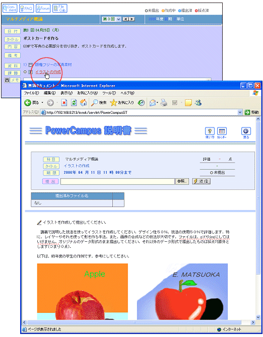
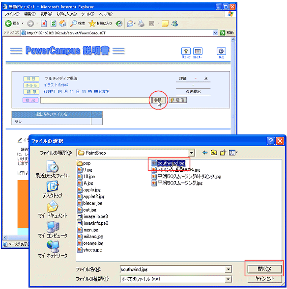
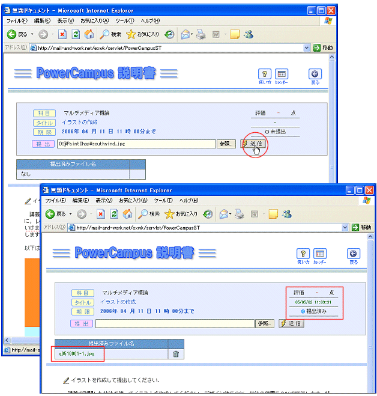
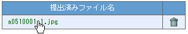
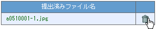

作成したファイルを提出する
ファイルを提出する
ファイルの確認とファイルの削除
演習で作成したワープロファイルやソースプログラムファイルなど，あらゆるファイルをそのまま提出する課題が，ファイル提出課題です．ファイルはブラウザから送信することで提出できますので，例えば自宅のパソコンからでも提出可能です．ここでは，提出方法や提出後の削除方法などについても説明しています．
ファイルを提出する
ファイルは何個でも送信できます．
ただし，一度に送信できるのはひとつですので，複数のファイルを送信する場合には以下の手順のうち，
と
を繰り返し行ってください．
課題タイトルをクリックしてファイル提出画面を開く
ファイル提出画面は，上段がファイルアップローダー，下段が課題の説明になっています．

参照をクリックして送信するファイルを選択する
参照
をクリックすると下図のようなファイルダイアログが開きます．ファイルのあるフォルダに移動し，送信したいファイルを選択してから
開く
ボタンをクリックします．

送信をクリックする
ファイル名が送信欄に転記されていますので，最後に
送信
をクリックします．送信をクリックするとファイルがサーバーに送信されます．サーバーで無事にファイルが受け取られると，提出済みランプが青く点灯し，さらに下段の提出済みファイル名欄にファイルの名前が表示されます．このとき，
ファイル名は学籍番号に付け替えられます．

ファイルの確認とファイルの削除
ファイル内容を確認するには，提出済みファイル名欄のファイル名をクリックします．
そのファイルを開くことができるソフトウェアがパソコンにインストールされていれば，
新たにウィンドウが開いてファイルの内容が表示されます．(ファイルを開けないときは保存のダイアログが開きます)

ファイルを削除するには，提出済みファイル名欄の
ゴミ箱アイコン
()をクリックしてください．



 と
と を繰り返し行ってください．
を繰り返し行ってください． 課題タイトルをクリックしてファイル提出画面を開く
課題タイトルをクリックしてファイル提出画面を開く